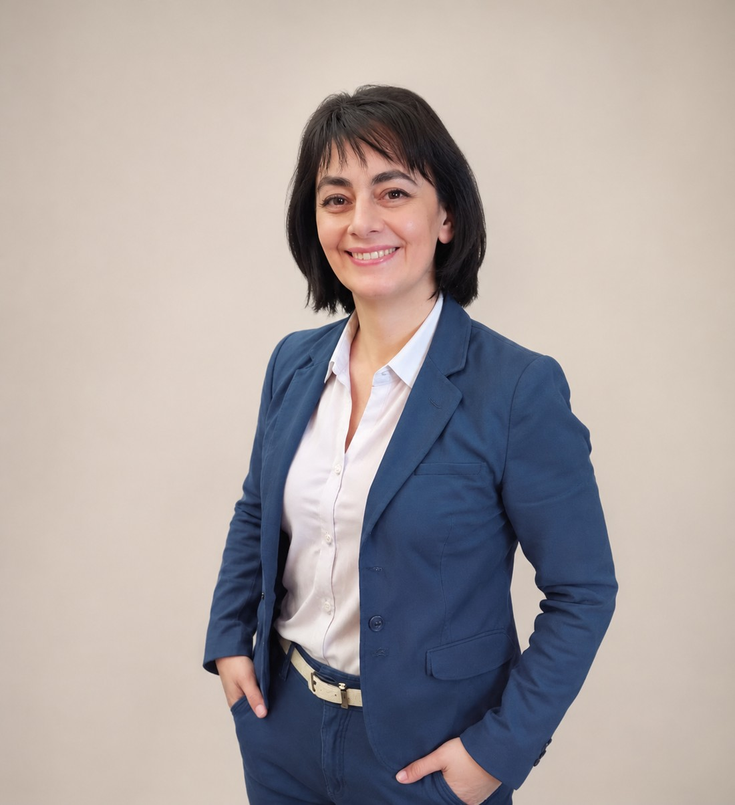

Продажи растут, а свободных денег не становится больше
Деньги остаются в запасах, долгах покупателей или уходят на текущие платежи. Анализирую, что происходит с денежными потоками и сколько средств нужно для работы бизнеса.
EF FIN / Финансы для решений собственника
Помогаю собственникам разобраться в прибыли и денежных потоках, увидеть прибыльность товаров и направлений. Настраиваю управленческий учет и участвую в решении финансовых вопросов бизнеса.
Работаю лично, дистанционно по всей России.
Записаться на бесплатную диагностикуДо 60 минут. Обсудим ситуацию в компании и задачи, которые требуют внимания.

Евгения Файзуллина
Финансовый директор на аутсорсе20+лет практического
опыта в финансах
Помогаю разобраться в причинах и определить, что стоит изменить.
Деньги остаются в запасах, долгах покупателей или уходят на текущие платежи. Анализирую, что происходит с денежными потоками и сколько средств нужно для работы бизнеса.
Общий результат может скрывать убыточные товары и направления. Проверяю расчет себестоимости и распределение расходов, помогаю увидеть прибыльность отдельных частей бизнеса.
Показатели расходятся, и непонятно, на какие цифры опираться. Проверяю правила учета и исходные данные, объясняю причины расхождений и предлагаю порядок исправления ошибок.
Поступления и обязательства не совпадают по срокам. Настраиваю платежное планирование, чтобы заранее видеть возможный дефицит денег и обсуждать варианты его покрытия.
Рост продаж не всегда покрывает снижение цены и дополнительные расходы. Рассчитываю, как цены, скидки и затраты влияют на прибыль товаров и каналов продаж.
Данные приходят поздно, и приходится действовать без полной картины. Помогаю определить порядок подготовки отчетов, сроки и ответственных, чтобы получать информацию вовремя.
На бесплатной диагностике обсуждаю с вами ситуацию в компании, вопросы по финансам и действующую отчетность. Определяю, какие данные нужны для оценки объема работы.
Предлагаю состав работ, ожидаемый результат, сроки и стоимость. Согласую ваше участие, задачи сотрудников и порядок взаимодействия.
В зависимости от задачи проверяю отчеты, настраиваю учет или платежное планирование, разбираю финансовые результаты. По ходу работы обсуждаю с вами выводы и возникающие вопросы.
Объясняю, что показывают цифры и какие ограничения есть у данных. Предлагаю варианты, рассчитываю последствия и помогаю обосновать решения.
По итогам аудита передаю заключение и дорожную карту исправлений. При внедрении передаю инструменты и инструкции, обучаю ответственных и оказываю согласованную поддержку. В формате финдиректора на аутсорсе продолжаю регулярную работу с вами и возвращаюсь к принятым решениям, чтобы оценить результат.
Деньги оставались в запасах, а расходы на продвижение и обязательные платежи создавали риск кассовых разрывов. Не хватало ясности в прибыльности товаров и каналов продаж.
Я проанализировала прибыльность ассортимента и каналов продаж, подготовила рекомендации по ценам и рекламе. Внедрила платежное планирование с учетом графика выплат маркетплейсов.
чистая прибыль
После моей работы и изменений со стороны компании чистая прибыль выросла на 14% за три месяца относительно предыдущих трех месяцев. Расчет по данным управленческого ОПиУ.
За шесть месяцев я помогла организовать прогнозирование дефицита денег и планирование его покрытия.
Не хватало достоверной информации о прибыльности товаров и каналов. Деньги замораживались в запасах, а платежное планирование не позволяло заранее оценивать риски.
Я проанализировала ассортимент, расходы и денежные потоки, внедрила платежный календарь, предложила изменения в управлении запасами.
валовая прибыль
Компания пересмотрела цены и закупки, исключила нерентабельные позиции. Валовая прибыль выросла на 12% к сопоставимому периоду предыдущего года по управленческому ОПиУ.
За пять месяцев организовано прогнозирование и плановое покрытие дефицита денег.
Результаты направлений учитывались вместе, поэтому собственник не видел прибыльность каждого из них.
Я разработала структуру управленческой отчетности, организовала аналитику по направлениям и проектам, помогла наладить регулярное формирование ОДДС и ОПиУ. Я выявила низкомаржинальное оптовое направление и подготовила предложения по затратам и рентабельности.
по каждому направлению
Собственник получил раздельную отчетность и основу для решений по каждому направлению.
Результаты отдельных проектов не являются гарантией для других компаний.
01 / Чем могу помочь
До начала проекта согласую задачи, объем работ и ответственность участников.
Проверю действующую управленческую отчетность: методологию, взаимосвязи отчетов и качество данных в пределах согласованной задачи. Покажу существенные ошибки, ограничения отчетов и причины, по которым показатели могут искажать финансовую картину.
Подготовлю письменное заключение и дорожную карту исправлений. Обсужу выводы с собственником.
Период проверки: последние три месяца. Отчеты: ОДДС, ОПиУ и управленческий баланс при их наличии, плюс необходимые расшифровки.
Срок: ориентировочно две недели от получения согласованного комплекта данных.
Восстановление учета, ввод первички и полная перепроверка всех операций в аудит не входят.
Внедрю отчет о движении денежных средств и платежный баланс, чтобы видеть поступления, обязательства и возможный дефицит денег заранее.
Настрою прогноз на три месяца с детализацией первого месяца по дням. Помогу организовать ежедневное внесение фактических данных и еженедельное обновление плана, согласую ответственных и порядок работы.
На внедрение предусмотрено до четырех недель, затем четыре недели поддержки в согласованном объеме. Постоянное ежедневное ведение отчетов в услугу автоматически не входит.
Выстрою взаимосвязанную управленческую отчетность: ОДДС, ОПиУ и управленческий баланс. Разработаю правила учета, необходимую аналитику и порядок закрытия месяца. Проверю взаимосвязи показателей. Корректно работающие отчеты использую как основу.
В согласованный объем включу ввод начальных остатков и формирование отчетности за один месяц. Обучу ответственных сотрудников и передам инструкции.
До договора помогу определить, кто будет регулярно вести отчетность. Постоянное ежедневное ведение автоматически в проект не входит.
Стоимость, объем и срок определю после диагностики.
Обычно проект занимает около трех месяцев. Точный срок определю после диагностики с учетом объема работ, качества исходных данных и готовности сотрудников участвовать в проекте. После внедрения предусмотрю четыре недели поддержки.
Если управленческая отчетность уже есть, но разбираться в цифрах и решать, что делать дальше, приходится самому, подключаюсь к регулярной работе с финансами.
Помогаю ответить на вопросы собственника: почему прибыль снизилась, хватит ли денег на запланированные расходы, какое направление тянет результат вниз и что стоит изменить. Обсуждаю варианты, рассчитываю последствия и возвращаюсь к принятым решениям, чтобы оценить результат.
Вы получаете мое регулярное участие в финансовых вопросах без найма директора в штат.
От 75 000 руб. в месяц.
Состав задач, частоту встреч и порядок взаимодействия согласую до начала работы. Окончательные решения принимает собственник. Первичка, восстановление учета и постоянное оперативное ведение отчетов автоматически не входят. Бюджетирование согласую отдельно.
02 / Лично о моей работе
Я Евгения Файзуллина, финансовый директор на аутсорсе и специалист по постановке управленческого учета.
Работаю с производственными и торговыми компаниями, бизнесом на маркетплейсах, розничными сетями и группами компаний.
Помогаю разобраться, как формируется прибыль, куда уходят деньги и что влияет на результат отдельных товаров и направлений. Соединяю понимание учета с финансовым анализом и практической работой над вопросами собственника.
Объясняю выводы понятным языком, обсуждаю варианты действий и их последствия. Если данных для решения недостаточно, показываю, что нужно проверить.
Мои публикации в РБК Компании ↗Работаю лично, дистанционно по всей России.
03 / Связаться со мной
Напишите мне или позвоните, чтобы записаться на бесплатную диагностику.
До 60 минут. Обсудим ситуацию в компании и задачи, которые требуют внимания.
Для записи на диагностику напишите мне о задаче бизнеса и удобном времени для разговора.